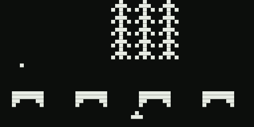
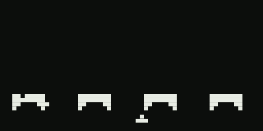

Space Invaders
Fred Lever (Jnr) · DREAMER no. 9 (1981-05) p. 20 2K RAMplayable, see notes



A version of the arcade classic with an animated intro in which the title is misspelt and then fixed by an invader. Hit by four bombs, or let the invaders reach the right edge, and you lose; a DANGER warning shows when they get close. Winning earns a free game.
Keys
1 starts, C left, E right, F fire.
Files
| File | Version | Load | Run |
|---|---|---|---|
| Space Invaders.c8 | main | 0200-05FF | C000 |
Listing as transcribed (with notes): space_invaders.txt
Source
DREAMER no. 9 on archive.org, p. 20 (PDF page 22). Author: Fred Lever (Jnr).
Corrections applied
None.
Open doubts
- The article says right = D but the listing (0386 = 660E) reads key E; the listing was kept.